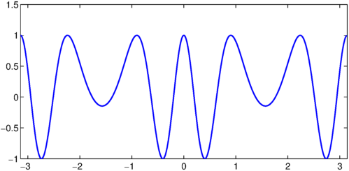
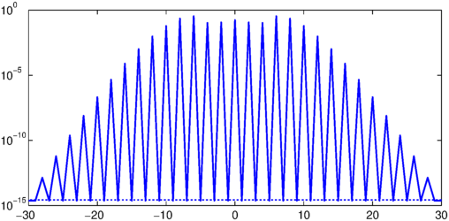
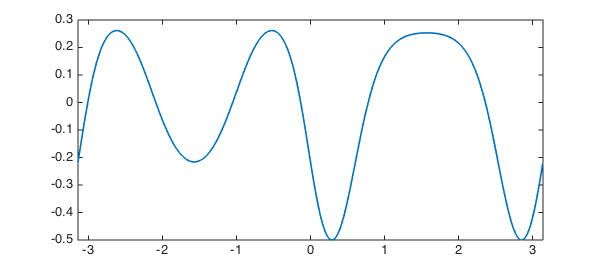
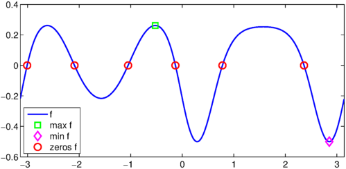
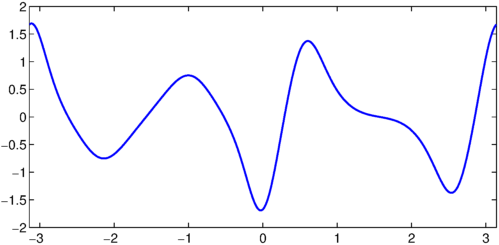
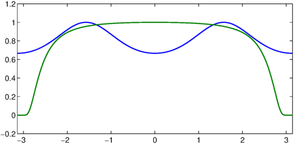

One of the new features of Chebfun version 5 is the ability to create chebfuns of smooth periodic functions using Fourier series. This example introduces and demonstrates some of the functionality of this new tool.
LW = 'linewidth'; lw = 1.6; MS = 'MarkerSize'; ms = 10;
Construction and comparison
Fourier-based chebfuns, or "fourfuns" as we like to refer to them, can be created with the use of the 'periodic' flag in the chebfun constructor. For, example, the function $f(x) = \cos(8\sin(x))$ for $-\pi \leq x \leq \pi$ can be constructed as follows:
domain = [-pi,pi]; f = chebfun(@(x) cos(8*sin(x)),domain,'periodic') plot(f,LW,lw);
f =
chebfun column (1 smooth piece)
interval length endpoint values periodic
[ -3.1, 3.1] 61 1 1
Epslevel = 2.675450e-15. Vscale = 1.000000e+00.

Here $f$ is represented to machine precision using a Fourier interpolant rather than a Chebyshev interpolant. The displayed information for $f$ above shows that it is of length 61, meaning that $f$ is resolved to machine precision using 61 samples, or $(61-1)/2=30$ (complex) Fourier modes. These coefficients can be displayed graphically by
plotcoeffs(f)

Since $f$ is smooth and periodic, a Fourier representation requires fewer terms than a Chebyshev representation of $f$ to reach machine precision. We can check this by constructing $f$ without the 'periodic' flag:
f_cheby = chebfun(@(x) cos(8*sin(x)),domain)
f_cheby =
chebfun column (1 smooth piece)
interval length endpoint values
[ -3.1, 3.1] 101 1 1
Epslevel = 3.552714e-15. Vscale = 1.000000e+00.
The ratio of length of the Chebyshev series to the Fourier series should be approximately $\pi/2$ since the former has a resolution power of $\pi$ points per wavelength and the latter of 2 points per wavelength. We can check this numerically as
ratio = length(f_cheby)/length(f) theoretical = pi/2
ratio = 1.655737704918033 theoretical = 1.570796326794897
Trying to construct a fourfun from a non-periodic or non-smooth function will typically result in a warning being issued and an "unhappy" fourfun, as illustrated for the unit step function below:
f = chebfun(@(x) 0.5*(1+sign(x)),domain,'periodic') plot(f,LW,lw);
Warning: Function not resolved using 65537 pts. Have you tried 'splitting on'?
f =
chebfun column (1 smooth piece)
interval length endpoint values periodic
[ -3.1, 3.1] 65536 0.5 0.5
Epslevel = 1.818989e-12. Vscale = 1.

The length of $f$ is 65536, which is the maximum number of samples used in the construction process to try to resolve $f$. The famous Gibbs' phenomenon can be seen near the discontinuity in the plot of $f$. Chebfun can be used to represent this function in non-periodic mode (i.e. using Chebyshev series) with the option of splitting on:
f = chebfun(@(x) 0.5*(1+sign(x)),domain,'splitting','on')
f =
chebfun column (2 smooth pieces)
interval length endpoint values
[ -3.1, 0] 1 0 0
[ 0, 3.1] 1 1 1
Epslevel = 1.110223e-15. Vscale = 1. Total length = 2.
Splitting is not an option for fourfuns.
Basic operations
Many Chebfun operations can also be applied directly to a fourfun. Some of these basic operations are illustrated in the examples below.
Addition, subtraction, multiplication, division, and function composition can all be directly applied to a fourfun. However one should be aware that operation should result in a smooth and periodic function. The following example illustrates some of these operations:
g = chebfun(@(x) sin(x),domain,'periodic'); f = tanh(cos(1+2*g).^2)-0.5 plot(f, LW, lw)
f =
chebfun column (1 smooth piece)
interval length endpoint values periodic
[ -3.1, 3.1] 145 -0.22 -0.22
Epslevel = 3.033487e-15. Vscale = 4.997782e-01.

The max, min, and roots of $f$ can be computed by
[maxf,xmaxf] = max(f); [minf,xminf] = min(f); rootsf = roots(f); maxf minf rootsf
maxf = 0.261594155955765 minf = -0.500000000000004 rootsf = -3.009212218006480 -2.090420462897023 -1.051172190692771 -0.132380435583312 0.779312428506053 2.362280225083740
These can be visualized as
plot(f, LW, lw), hold on
plot(xmaxf,maxf,'gs',xminf,minf,'md',rootsf,0*rootsf,'ro',MS,ms)
legend('f','max f','min f','zeros f','location','southwest')
hold off;

The derivative of $f$ is computed using diff:
df = diff(f); plot(df, LW, lw)

and the definite integral is computed using sum:
intf = sum(f)
intf = -0.074010812957415
Complex-valued fourfuns are also possible. For example:
f = chebfun(@(x) 1i*(13*cos(x)-5*cos(2*x)-2*cos(3*x)-cos(4*x)) + ...
16*sin(x).^3, domain, 'periodic')
plot(f, LW, lw), axis equal
f =
chebfun column (1 smooth piece)
interval length endpoint values periodic
[ -3.1, 3.1] 9 complex values
Epslevel = 4.911761e-16. Vscale = 17.

The area enclosed by this curve can be computed as
area_heart = abs(sum(real(f).*diff(imag(f))))
area_heart =
5.654866776461625e+02
According to [1], the true area enclosed is $180\pi$. The relative error in the computation above is then
err = (area_heart - 180*pi)/(180*pi)
err =
-4.020849375084742e-16
The convolution of two smooth periodic functions can be computed using the circconv (circular convolution) function. The example below demonstrates this function in combination with the additional feature that allows fourfuns to be constructed from function values. The latter is demonstrated first:
rng('default'), rng(0);
n = 201;
x = fourpts(n);
func_vals = exp(sin(2*pi*x)) + 0.05*randn(n,1);
f = chebfun(func_vals,domain,'periodic')
f =
chebfun column (1 smooth piece)
interval length endpoint values periodic
[ -3.1, 3.1] 201 1 1
Epslevel = 1.599777e-15. Vscale = 2.775945e+00.
Here $f$ interpolates the noisy func_vals at 101 equally spaced points from $[-\pi,\pi)$ using the Fourier basis. The high frequencies in this function can be smoothed by convolving it with a mollifier, in this case a (normalized) Gaussian with variance 0.1.
sigma = 0.1; g = chebfun(@(x) 1/(sigma*sqrt(2*pi))*exp(-0.5*(x/sigma).^2),domain,'periodic');
Note that the resulting respresentation of $g$ is actually the periodic extension of the Gaussian over $[-\pi,\pi]$. The convolution of $f$ and $g$ is computed and visualized using
h = circconv(f,g);
plot(g,'b',LW,lw), hold on
plot(f,'r',LW,lw), plot(h,'k',LW,lw)
legend('Molifier g','Noisy function f','Smoothed function h');
hold off;

References
- Mathworld Heart Curve: http://mathworld.wolfram.com/HeartCurve.html